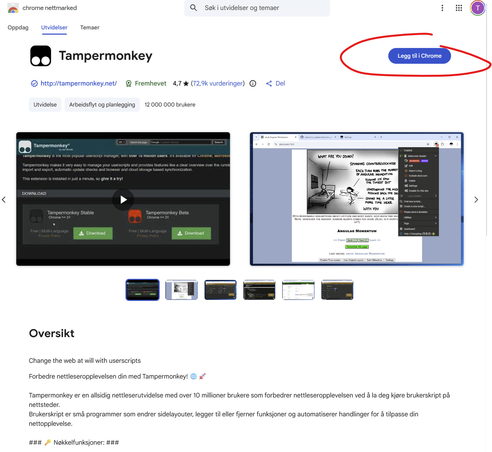
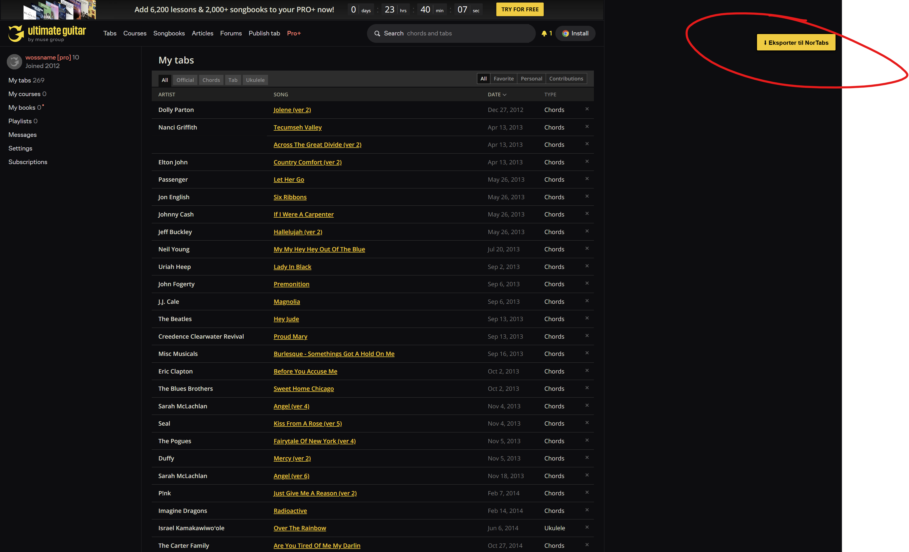
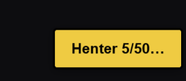
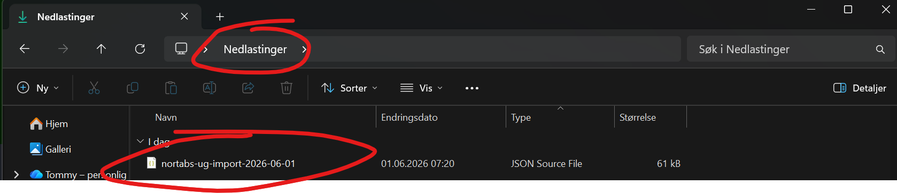
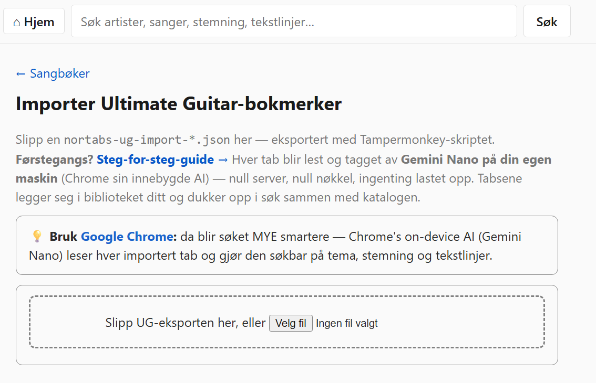
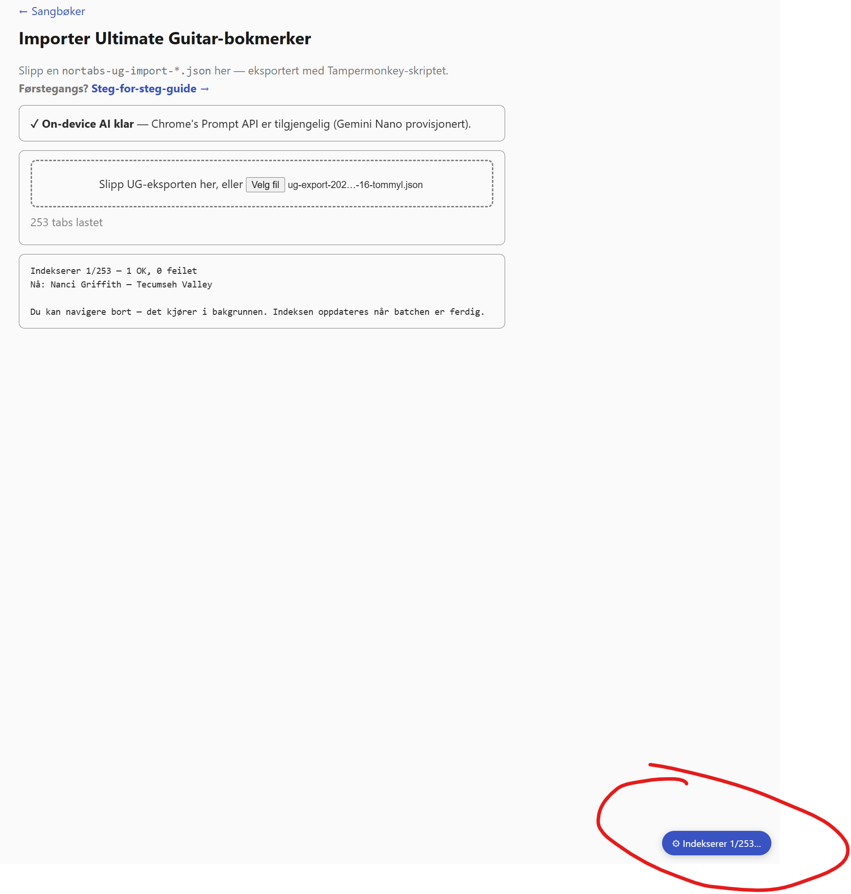
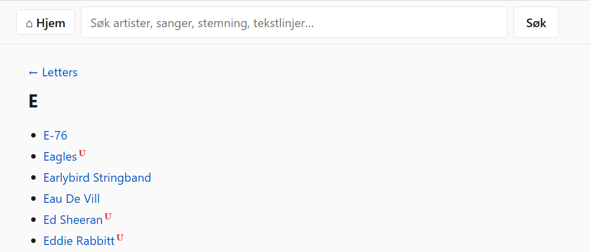

Ta dine egne Ultimate Guitar-bokmerker og legg dem i biblioteket ditt i TabTabTab. Tabsene blir søkbare ved siden av nortabs.net-katalogen. I Chrome blir hver tab i tillegg taget av en on-device AI (Gemini Nano) for tema/stemning/tekstlinje-søk — alt skjer i din egen nettleser, ingenting går til en server.
Eksportøren er et userscript — et lite JavaScript-fragment som kjører i nettleseren din når du er på Ultimate Guitar. Du trenger en utvidelse som styrer slike skript:
Klikk «Legg til»/«Install» for å installere utvidelsen. Du får et lite ikon i verktøylinja når den er aktiv.

Klikk lenken under for å åpne rå-skriptet. Tampermonkey
(eller Violentmonkey/Greasemonkey) skal automatisk gjenkjenne .user.js-filer
og vise en installasjons-side:
→ Installer TabTabTab UG-eksportør
På installasjons-siden klikker du «Install».
Skriptet er rundt 200 linjer JavaScript og kjører kun når du er på
ultimate-guitar.com/user/mytabs-siden.

Logg inn på ultimate-guitar.com
og åpne din egen bokmerke-side (My Tabs → Favorites
eller direkte til ultimate-guitar.com/user/mytabs).
Viktig: sett side-størrelses-filteret til «All» (i stedet for 50/100). Eksportøren leser kun bokmerker som er synlige i DOM-en — med «All» er det alle bokmerkene dine på samme side.

Når skriptet er aktivt på bokmerke-siden, ser du en flytende knapp nede til høyre med teksten «⬇ Eksporter til NorTabs». Klikk på den.
Skriptet går gjennom alle bokmerkene dine, henter hver tab-side, og pakker innholdet i en JSON-fil. Det er en høflighet-pause på ~800 ms mellom hver tab, så for 250 bokmerker tar det ca. 3-4 minutter — vinduet kan stå åpent og rulle progresjon i bakgrunnen.

Når alt er ferdig laster skriptet automatisk ned en fil med navn
nortabs-ug-import-<dato>.json. Du finner den i
Downloads-mappa di.

failed[]-listen i JSON-en med en
begrunnelse. Workaround: bokmerk den frie -chords--versjonen
av samme låt i stedet — den fungerer som regel.
Gå til TabTabTab → Sangbøker → ⤓ Importer UG-tabs. Slipp JSON-filen på drop-sonen, eller klikk for å velge fra fil-velgeren.

Hva som skjer videre avhenger av nettleseren:

Når jobben er ferdig dukker det opp en sangbok «Mine UG-importer» nederst i sangbok-lista, og artistene dine vises under riktig bokstav i bokstav-bla. UG-tabs har en liten rød U som markør slik at du ser hvilke tabs som er dine.
Søk på tema, stemning, eller tekstlinjer i søkefeltet
øverst. F.eks. melankolsk roadtrip, eller en
husket lyrikk-linje — dine importerte tabs ligger nå i
samme indeks som katalogen, med en liten boost slik at de du selv
importerte rangerer høyere enn tilfeldig-tagged katalog-låter.
